产品核验 · 竞品研究 · 决策稿 / 2026-10-07Friend-Pi 后续演进规划书
19 个优化点，每点有现状、竞品依据、实施边界、完成判据和前后产品对比图。保留横向项目、纵向会话、轮次侧轨、底部计划/协作控制与统一工作台五个轻页面；启停和详细管理放设置，上下文不展示。
修复前历史基线：当时功能完备性未通过。原95项测试与制品核对通过；新增独立核验确认13个缺口。用户现已批准并实施本批修复；请查看
最新实施对比与边界。此处保留研究时点证据。已有轮次预览、书签、拖动分栏不重复算作待开发。
图中左侧是源码/实测依据的缩略示意与示例数据，右侧是未来方案；实际截图另附。采用选项只保存到本浏览器并可导出JSON，不联网、不自动执行。
阅读全文与全部功能覆盖边界 · MiniMax / Reasonix覆盖 · Codex / DSH / ZCode覆盖
功能核验：13个确认缺口与证据
95既有测试通过；专项43/31是其子集，不重复累加。新增5个正向故障边界通过。P1/P2缺陷程度与规划P0/P1/P2施工顺序分别使用。
| ID | 程度 | 现象 | 证据 |
|---|
| SWARM-STOP-OBJECTIVE-CHECK | P1 | 停止后宿主检查继续执行 | 真实延迟Node进程探针 |
| SWARM-TARGETED-REWORK | P2 | 返工重跑未受影响任务 | 独立两任务控制器探针 |
| EXPERT-AUTO-TOOL-SCOPE | P2 | 自动采用与明确采用工具范围不一致 | 独立专家策略探针 |
| SWARM-SHARED-EVENT-COMMIT | P2 | 共享变更事件先于事务提交 | 双SQLite连接探针 |
| R02 | P1 | 纠正一个事实丢掉同来源无关约束 | Memory/ReBuild组合回归 |
| R01 | P2 | 普通更正仍同时保留新旧有效要求 | 组合回归及本轮真实GUI |
| M01 | P2 | 请帮我记住的中文表达误拒绝 | 独立明确偏好回归 |
| M02 | P2 | 跨会话前台未抢占另一后台调用 | 双活控制器回归 |
| M03 | P2 | 遗忘原史fork后换词事实重新成为候选 | 真实Pi fork与fake reflection回归 |
| CL-01 | P1 | 缺失原史静默替换索引 | 真实Main隔离VM/harness |
| CL-02 | P2 | Diff漏掉未跟踪文件 | 真实Git与本轮真实GUI |
| CL-03 | P2 | 冷恢复消息投影丢工具/多模态结构 | 真实Pi JSONL与SDK进程 |
| CL-05 | P2 | 默认Swarm和默认插件互相矛盾 | 实际Main隔离harness |
客户端核验 · Swarm/Expert · Memory/ReBuild
本轮真实GUI覆盖主要开发旅程；图片模型、全交互超时/取消、崩溃合并恢复GUI全路径与长窗口全组合仍未完整覆盖。源码、fake Provider、历史同候选证据和本轮实际GUI严格分开。
竞品范围：136条功能地图，实际执行与受限分别记录
MiniMax 3.0.68设置、Memory summary、快捷键、审查/工作树、Plugin/MCP与Agent表单等已查看。新任务派发未确认结果，清单持续加载；执行未写通过。公开CLI与桌面不同。
Reasonix 1.38.6真实只读测试、一次性工具批准、停止ask、正式Plan审批执行、文件预览；批准后Node24独立复验2/2通过。Diff按钮点击未证明实际切换。
DSH 0.2.0-rc.2真实只读测试、工具EXIT=0、计划全文与批准执行，独立复验2/2通过。另实际两只读成员完成并打开原会话。代码工作视图未开，不把普通工具展开当Trajectory或Changes验收。
Codex 26.1002Computer Use安全限制禁止访问自应用；本轮仅用户截图、官方文档与公开源研究，不声称亲手GUI验证。闭源桌面与开源CLI区分。
ZCode 3.14.312个管理页面实际查看，未配置模型所以没有真实运行。Computer Use源是占位，设置开关不等于实跑。未转移任何API Key。
Phone/IM/remote/充值/发布/新凭证/额外权限没有执行。Ocean装机身份未验证，未与同名社区主题相混。本稿不以通过率概括这些不同证据。
推荐顺序与产品取舍
A：先修13缺口与已承诺但有限的路径。B：计划审批、会话待处理、文件材料和设置归位。C：任务图/专家验证/来源连续性。D：轮次筛选与布局质量。09/10/11/16/17中的既有承诺修复提前，不能等增强。
S/M/L是相对闭包大小，不是工期保证。浏览器、交互终端、Team、侧聊、多窗口、云端、IM与媒体生成不默认加入简化Friend。保持Pi loop和JSONL权威、四独立插件与安全边界快照。
P0
01 · 停止状态与显式恢复
既有能力修复 · 工作量M · 依赖 无 · 未来未实现
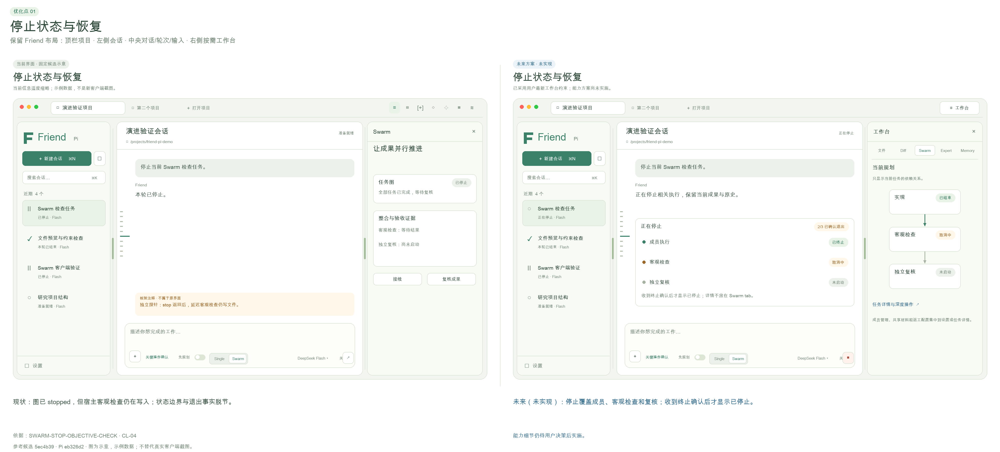
优化前Swarm stop 在独立探针中 1ms 返回 stopped，但已启动的宿主检查约600ms后仍写入文件。成员终止、未知副作用接续已有实现，宿主检查未纳入取消链。另有错误提示可能回填旧提交的源码风险 CL-04，尚未真实 GUI 复现，不能算确认缺陷。
竞品对照与证据范围Reasonix 本轮实际停止 ask 后显示‘本轮已中断’及检查工作区提示。MiniMax 公开 runtime 的 stop cascade 记录执行所有权和晚到唤醒抑制，是源码参考，桌面闭环本轮未确认。
优化方案每次运行建立统一取消所有权，覆盖主会话、成员、检查及复核。停止按钮立即显示正在停止；收到进程/会话终止收据后才显示已停止。仍未终止的对象逐项列出，未知副作用保留检查现场和显式新尝试入口；错误恢复区分未提交草稿和已经成功提交的请求。
客户端变化中央状态条与会话卡说明正在停止/已停止/未知；Swarm页仅在当前依赖图节点上标状态，取消收据与恢复细节从设置-任务诊断按需查看，不在工作台堆满检查卡。
预期使用体验用户能判断什么已停、什么仍可能产生影响，不因绿色勾或回答结束误判。
实现边界Swarm 控制器、SDK宿主进程生命周期与客户端；保持 Pi agent_settled 权威，不重写 loop。
完成判据真实延迟检查在 stop 后不再产生第二次写入；覆盖取消中的成员、复核、进程崩溃、晚到事件和冷重启。不同会话的取消不能相互串扰。未知副作用不得自动重放。
风险与限制停止不等于撤销已发生的外部效果；界面必须保留这一语义。
P0
02 · 原始历史缺失保护
既有能力修复 · 工作量S · 依赖 无 · 未来未实现
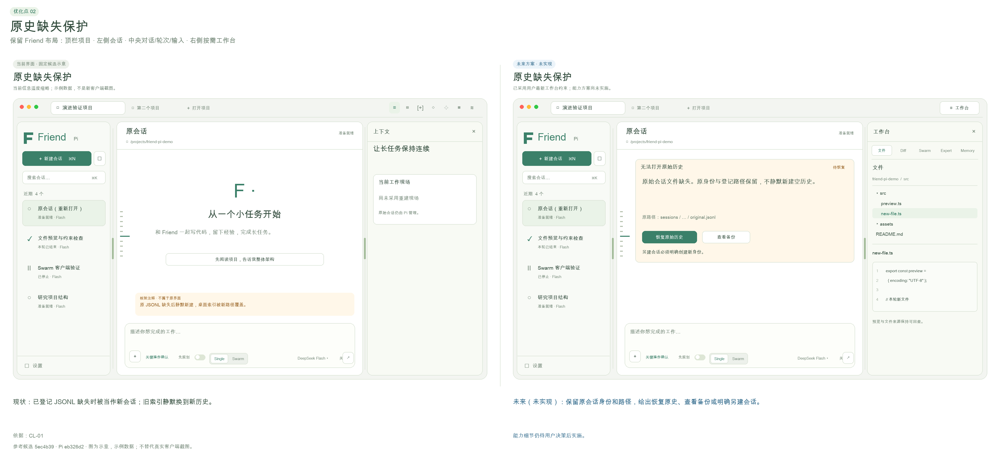
优化前已登记 JSONL 文件缺失时 Main 传入 undefined，SDK 建立新历史，ready 后桌面索引静默改成新路径；隔离 Main harness 已复现。此时并未证明旧文件被删除，但原会话的历史入口会丢失。
竞品对照与证据范围Codex 的 worktree 恢复和环境身份值得借鉴，但本轮自应用 GUI 被阻止；这是官方资料参考，没有直接体验历史损坏恢复。
优化方案区分新建会话和恢复已有会话。恢复前验证已登记路径及会话身份；缺失/损坏时保留索引，显示明确错误和只读诊断。用户可重新定位原史、查看已有备份，或明确另建会话；禁止覆盖旧身份。
客户端变化会话卡显示历史不可用；中央恢复卡保留项目/会话/原路径，提供选择原史与另建按钮。恢复失败仍可查看诊断并返回其他会话。
预期使用体验历史异常可解释、可恢复，不把空白聊天伪装成原会话。
实现边界Electron Main 的 session open 与索引；不把 SQLite 聊天副本引入系统。
完成判据自有临时会话正常退出后移动 JSONL，打开必须报缺史且索引保持；恢复原文件后全部原条目和分支身份可读。另测损坏 JSONL、路径重定向和错误身份。
风险与限制自动备份若新增，必须限定容量与可读权限；首修可以只实现 fail-closed 和手动重定位。
P0
03 · 完整消息、Markdown 和工具过程
修复与展示完善 · 工作量M · 依赖 02 · 未来未实现
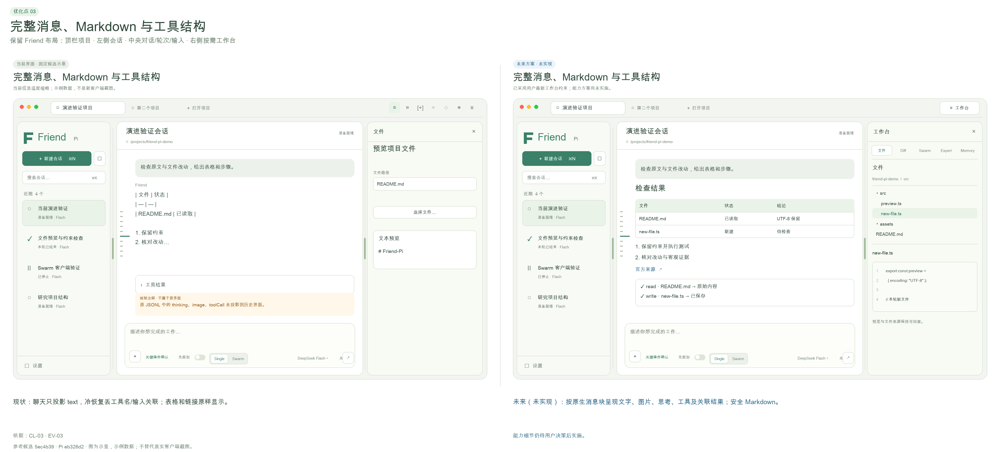
优化前冷恢复只投影 role/text/id；原生 JSONL 的 image、thinking、toolCall 仍存在，但客户端缺工具名/参数/结果关联。当前流式本轮已有工具过程，不能说完全没有。链接、表格、编号列表按原 Markdown 显示，真实 GUI 与静态渲染都观察到。
竞品对照与证据范围DSH 本轮普通 Chat 实际展开命令、输入、EXIT=0 和耗时，回答表格也正确展示；Reasonix 使用过程折叠与本轮结果收据。DSH 专门 Trajectory 视图本轮未切换，不能把普通工具展开记为 Trajectory 验收。
优化方案从 Pi 原条目生成版本化展示 DTO，保留内容块、toolCallId、工具输入/输出/状态及来源。使用安全 Markdown 渲染链接、表格、编号、代码与复制，所有文件链接经过项目边界解析。历史和当前轮使用同一投影，不新增历史权威存储。
客户端变化每轮默认显示简洁结果与折叠过程；展开后可核对工具名、命令、输入、输出与取消状态。图片原附件和能力限制可见；错误成为独立卡片。
预期使用体验长对话重开后仍能验证‘读了什么、做了什么’，研发答复可直接阅读和打开来源。
实现边界core history adapter、SDK事件DTO、Renderer；Pi JSONL仍唯一原史。
完成判据同一真实原史含图片/思考/两个同名不同参数工具，冷重启前后投影一致，结果准确关联；安全链接、表格、列表、长代码、失败/取消工具与恶意HTML不能误执行。
风险与限制渲染器要处理很大的工具输出，保留分页与原文入口，不能全量一次塞入DOM。
P0
04 · 完整变更清单与未跟踪文件 Diff
既有能力修复 · 工作量S · 依赖 03 · 未来未实现
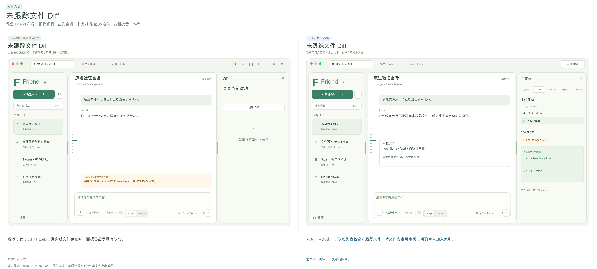
优化前git diff HEAD 不包含未跟踪新文件。根 Agent 在临时项目新增 new-proof.txt，文件预览能打开，但 Diff 说‘当前没有工作区改动’；真实 Git fixture 也复现。
竞品对照与证据范围Codex 官方 review 说明区分 Unstaged/Staged/Branch/Last turn，未提交审查包括未跟踪文件；仅资料核对。Reasonix 真实执行收据显示2文件、部分统计与检查结果；其 Diff 点击本轮未确认转变。
优化方案用 Git status 建立完整文件清单，分别处理 tracked/untracked/deleted/renamed/binary。未跟踪文件显示内容作为新增，不偷偷 git add。第一步修漏报；再加入工作区与本轮变更两种范围和检查收据。
客户端变化右侧按文件展示新增/修改/删除及跟踪状态，选文件看差异。本轮结果卡与真实检查联动，统计不可用明确提示。
预期使用体验用户能审阅所有成果，避免以为没有改动而漏掉模型创建的新文件。
实现边界桌面Git只读服务与结果投影；不新增提交/推送/PR自动流程。
完成判据覆盖仅untracked、已暂存、未暂存、rename/delete、二进制、空文件、忽略文件与非Git项目；UI统计与真实status一致，查看不会改变索引。
风险与限制本轮差异需有真实基线，不能把全工作区用户改动都标作Agent成果。
P0
05 · 纠正约束与事实粒度的失效关系
既有能力修复 · 工作量L · 依赖 03 · 未来未实现
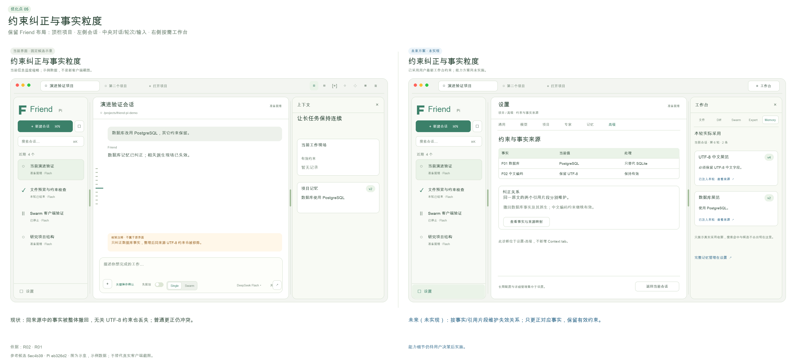
优化前R01：普通纠正蓝色→绿色后现场仍保留双方，根 GUI 已再次复现。R02：同一消息中的数据库与UTF-8要求共用entry，只纠正数据库后整entry退休，未改的UTF-8约束一并丢失；此项为组合回归fixture，不冒充真实GUI已复现。
竞品对照与证据范围Reasonix 精确版本源码将背景事实、指令、召回和冲突作用域分层；本轮只实际查看Memory页，未对其纠正做同等故障测试。DSH计划全文明确约束及成功标准，是当前任务可读性参考。
优化方案把来源引用细化成事实/片段身份，保留原entry和被替代关系。普通明确纠正在下一安全边界处理；若无法可靠消歧，标记冲突待确认，不同时称两条为有效。Memory纠正只撤回相应事实和派生，其他约束继续有效。
客户端变化工作台取消上下文页面。普通纠正必要时在对话里给一条简短冲突确认；事实替代、来源覆盖和派生影响在设置-高级诊断按需回查。
预期使用体验改一条要求不会丢其他要求，也不会让旧要求继续以有效身份影响执行。
实现边界Memory与ReBuild版本化失效事件、持久来源覆盖；不把Topic变成权限或执行控制。
完成判据蓝→绿普通纠正安全边界后只绿有效；同entry两个事实只改一个，另一个和派生仍在；整理期间新增消息不丢；保存失败不推进水位。
风险与限制语义识别不能只靠模型自评。无法确定的更正必须让用户确认，规则/来源仍能逐项核对。
P0
06 · 遗忘不复出、候选整理与中文明确记住
既有能力修复 · 工作量M · 依赖 05 · 未来未实现
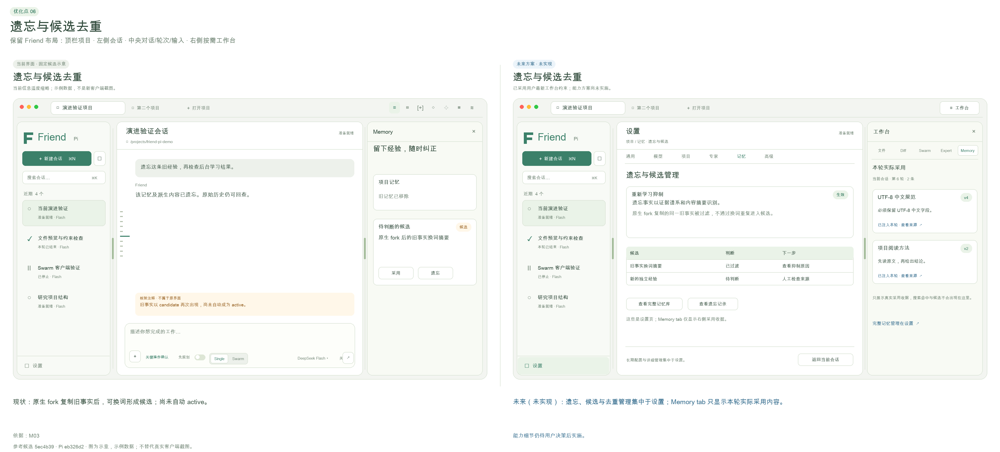
优化前真实Pi fork保留旧entryId/body、换新sessionId后，换词旧事实可再次成为候选；未自动active，不能说有效记忆已复活。‘请帮我记住’被规则误拒绝。Dream当前只精确去重与同标题冲突；真实GUI产生相近的数据库、UTF-8候选。
竞品对照与证据范围MiniMax真实设置区分使用记忆与主动学习；Codex官方也区分use/generate，资料参考。Reasonix Memory页说明背景记忆引用前仍应验证；都不能代替本产品遗忘语义的测试。
优化方案将遗忘绑定证据谱系和事实身份，跨fork/冷启动继续抑制；保留可回查原史。扩充中文肯定表达并严格保护否定。候选按事实聚合，冲突/重复/过期标记后由用户采用；Memory无Expert时保留方法候选，并提供恢复后补投。
客户端变化工作台Memory只列本轮真实注入/采用的记忆与来源版本，候选/全库/纠正/遗忘/方法补投都在设置-记忆；所有类别有独立的生效说明。
预期使用体验减少候选噪声，用户纠正和遗忘具有持续效果，常见中文记住请求可用。
实现边界Memory谱系/抑制、Dream整理与跨插件补投协议；个人偏好仍仅明确要求保存。
完成判据真实SessionManager.forkFrom及同会话冷启后换词反思不复出；短entryID碰撞不误删其他事实。‘请帮我记住’成功，‘请不要记住’与引用他人请求不保存个人偏好。
风险与限制语义重复不应简单删除：保留证据、冲突及用户撤回权；从未验证的候选不能自动成为有效方法。
P0
07 · 应用级前台优先与后台工作中心
修复与管理完善 · 工作量M · 依赖 01 · 未来未实现
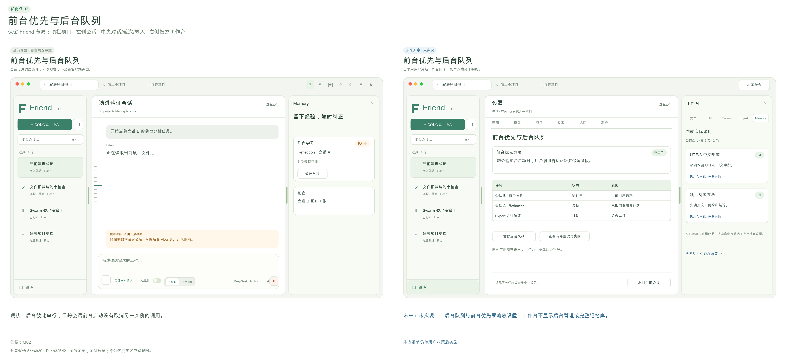
优化前后台控制器彼此串行，但B会话开始前台请求只取消B实例，A后台provider仍继续。GUI只展示最近6项jobs，阶段与暂停入口已有。没有背景额度上限是已接受的产品选择，不应借竞品额外加入硬上限。
竞品对照与证据范围Reasonix源码有跨会话任务监控，Codex官方支持长任务/后台worktree；本轮并未同等测试其前台抢占。这是可观察任务中心的参考，不是性能优越结论。
优化方案以应用级前台租约协调所有会话后台调用，前台启动使背景停到安全边界。串行后台调度显示来源、阶段、原因、重试次数和停止线；暂停状态持久化，恢复必须显式。
客户端变化设置-后台工作展示全局/项目队列与暂停、重试。工作台不放学习管理表单；对话仅在背景让路或有待处理错误时给精简状态。
预期使用体验交互请求优先，后台运行不再成为看不见的延迟来源。
实现边界core宿主与Memory/Expert跨进程版本协议、队列租约；不依赖共享库单例。
完成判据两活会话/不同进程中A背景调用、B前台启动，A signal在规定时间内中止或完成安全边界；晚结果不发布；后台最多3次失败后停；暂停/恢复冷启一致。
风险与限制provider可能不能真正停止远端计费，界面应显示本地取消收据和远端状态未知，不能承诺取消即零成本。
P0
08 · 专家采用策略一致与本轮版本透明
既有能力修复 · 工作量M · 依赖 03 · 未来未实现
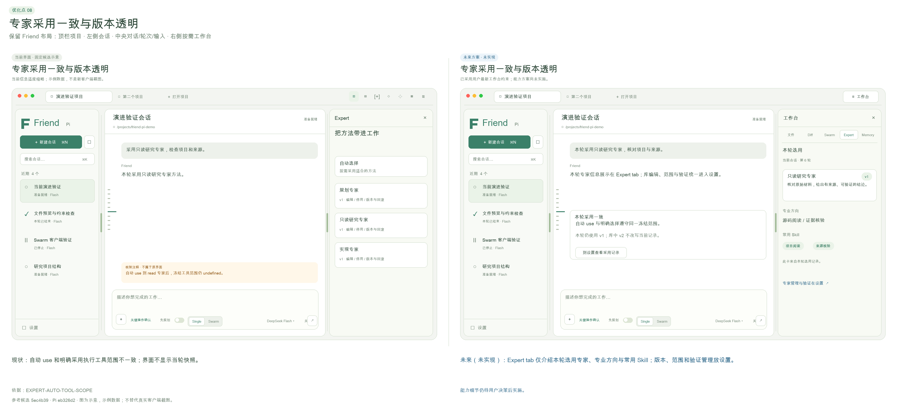
优化前自动use只读专家后bash未受同样范围限制，明确指定同专家会拦截；版本冻结和采用记录已存在。GUI有专家选择和版本管理，但不显示当前轮真实采用版本/hash。
竞品对照与证据范围Reasonix实际子智能体页显示固定工具数量、模型/推理继承来源；ZCode实际页区分内置general-purpose与只读Explore。Profile和模型身份分开，但它们没有证明具备Friend-Pi的客观成长门槛。
优化方案统一自动与明确采用的策略计算，在采用时校验冻结范围，不扩大本轮权限。公开采用收据，展示id/version/hash/Skill及工具范围；后续编辑明确下次执行生效。Swarm成员绑定自己实际采用的专家版本。
客户端变化统一工作台的Expert页仅展示本轮所选/实际采用专家的介绍、专业方向、常用Skill与采用版本。选择策略、启停、编辑、历史和权限细节放设置。
预期使用体验用户知道模型和方法各是什么，以及实际用了哪版，行为不因自动/手选而矛盾。
实现边界Expert beginRun/use策略、Swarm成员上下文与采用收据；沿用Pi工具钩子，不称完整OS沙箱。
完成判据read-only专家自动与明确两场景bash都拦；执行中编辑不改变当前快照；下一轮v2生效；成员和主会话各有真实采用记录，历史v1不改。
风险与限制多个专家范围组合须有明确交集/覆盖规则；不能为了专家名好看而增加权限。
P1
09 · DAG、定向返工与可操作的成员现场
先补原承诺，再增强可视化 · 工作量L · 依赖 01, 04, 08 · 未来未实现
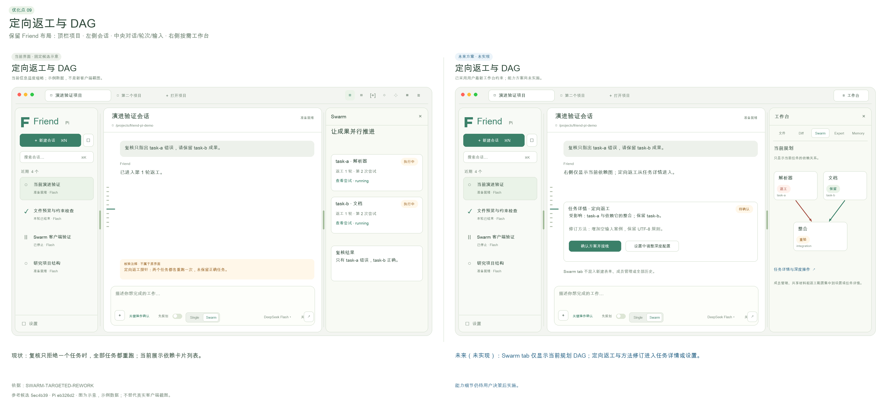
优化前依赖卡片、并发、任务尝试、结果、消息与独立复核真实存在；两任务只拒绝a时a和b都重跑。成员工具过程/原会话/保留worktree只以JSON路径呈现。根GUI自动拆分曾被非法写入范围拒绝，草稿保留但错误是底层RPC文字；手动两只读任务成功整合。
竞品对照与证据范围DSH本轮实际两个只读子智能体完成、父会话汇总，谱系菜单可打开成员原会话；只证明该夹具只读协作，没有验证写入并发/合并/异常。MiniMax Agent Team官方说明分工与复核，本轮桌面执行未确认。Reasonix TaskMonitor为源码与入口参考。
优化方案先增加受影响任务集合与依赖闭包，复核指向任务/检查，保留其他已通过成果。提供图视图与列表视图，成员可查看原过程和工作区。自动拆分先产生可修订草案，结构无效时给出字段问题和最多有限修复，不直接启动。返工前用户可改方法/范围，仍有2轮停止线。
客户端变化统一工作台Swarm页主要展示当前规划的DAG和节点状态、依赖关系；不常驻新建任务、成员聊天、共享表单和验证长卡。返工、方法调整与过程诊断放设置中的任务详情，成果可跳文件/Diff。
预期使用体验多人工作可理解、可干预，避免无关重跑和只看一个最终回答。
实现边界Swarm调度与契约、客户端图/成员视图；成员不递归派生，Git隔离与非Git串行保留。
完成判据复核只拒a且b独立时仅a重跑；a下游闭包准确失效；相同文件冲突保留worktree、基线变化暂停；原任务不会被改写，调整形成新尝试。无效自动图不启动成员。
风险与限制图不能成为执行权威；控制器校验每次操作版本。非Git写入仍串行且不承诺自动回滚。
P1
10 · 共享材料提交顺序与冲突合并
既有能力修复与体验完善 · 工作量S · 依赖 无 · 未来未实现
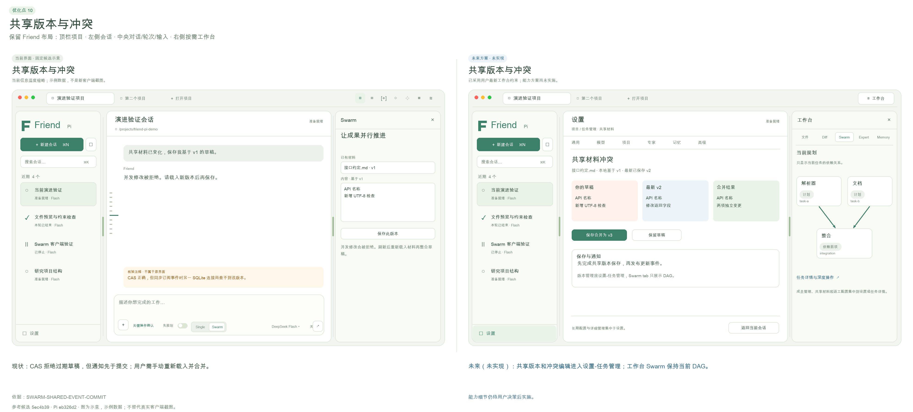
优化前版本CAS、短锁、不可变文件已通过；shared.changed先于事务commit，订阅者另一连接读不到通知所称版本。GUI保存v1已实际成功，但冲突后只提示刷新重载草稿。
竞品对照与证据范围Codex官方审阅允许定位到文件/行并提交反馈，作为冲突差异的资料参考；这不是共享文件锁机制的对等实测。
优化方案提交成功后再发布事件，每事件带图/文档/版本身份。冲突界面同时展示基于版本、最新版本与本地草稿，用户明确合并后CAS写入，不在模型思考期间占锁。
客户端变化Swarm页保持依赖图。共享材料作为只读材料可从文件页打开；编辑/CAS冲突与消息收据在设置-任务详情按需查看，不另加顶栏按钮。
预期使用体验协作意见不会静默覆盖，用户能理解冲突和通知代表的真实状态。
实现边界Swarm事务事件与共享文件协议、客户端差异；不引入复杂实时协作文档框架。
完成判据事件观察后第二SQLite连接能读到同版本；双写竞争一个成功一个明确CAS冲突，草稿保留；取消合并不写入。重复消息不重复处理。
风险与限制长期持锁会阻塞模型；仅在原子写边界占锁，GUI合并阶段不占锁。
P1
11 · Plan 审批卡与执行转换
既有探索补齐与交互增强 · 工作量M · 依赖 03, 08 · 未来未实现
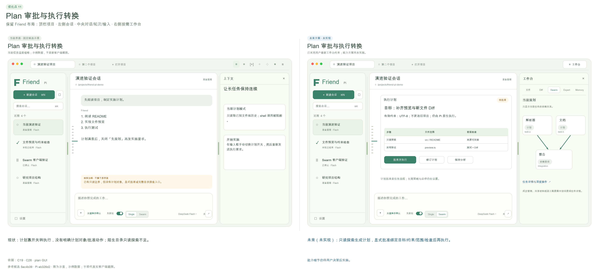
优化前计划模式已在工具边界禁写，不是仅提示词；默认工具仅read/bash/edit/write且计划禁bash，陌生目录缺ls/find/grep探索。用户切开关后能发只读请求，但没有独立的计划全文审批及采用身份。
竞品对照与证据范围DSH本轮实际Plan→右侧全文→同意执行，Reasonix实际三步方案→开始/修改/暂不执行→两文件改动+两测试通过；均在隔离临时项目。
优化方案优先补原生只读目录/搜索工具。计划形成版本化文档，展示范围、假设、成果和客观检查；用户批准该版本后转执行，可要求修改或退出。计划模式与Single/Swarm正交，不新增第三种Team模式。
客户端变化保留composer先规划滑块；中央短审批卡提供开始/修改/退出，计划全文在统一工作台文件页作为只读文档打开。批准时简短显示执行方式和模型/专家快照。
预期使用体验用户能批准具体方案，避免只是开关名字叫计划，实际执行内容仍不清楚。
实现边界SDK原生工具配置、应用计划控制器/审批桥；Pi公开扩展接口可实现，不改loop。
完成判据陌生嵌套项目能只读列举/搜索，写工具仍阻断；修改计划后旧批准失效；取消/超时/会话切换不批准；批准对应planId/version后才执行。
风险与限制批准计划不是无限授权，关键破坏性操作仍单独确认。
P1
12 · 项目与会话组织、状态和待处理入口
客户端管理增强 · 工作量M · 依赖 01, 02 · 未来未实现
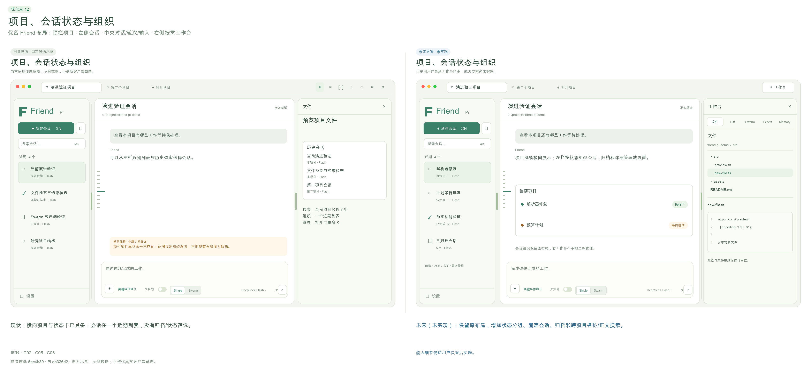
优化前横向项目栏、左侧会话卡状态、新建、重命名、名称搜索和历史已有。执行/等待/暂停/失败/停止状态部分齐备；首版无归档、关闭项目、跨会话待处理中心，这些不全是原承诺缺陷。
竞品对照与证据范围MiniMax实际项目分组和pin/archive入口、Reasonix实际项目树/时间筛选、ZCode实际分组/项目切换与归档入口；本轮未执行所有归档恢复流程。Codex组织为资料参考。
优化方案保持Friend横项目+左会话主布局，增加待审批/正在停止/需接续状态和可点击原因。提供置顶、可恢复归档和按状态筛选；搜索明确区分名称/原史正文，正文走Pi可重建索引。关闭项目只关闭界面，不删除数据。
客户端变化左侧近期/置顶/归档与状态筛选，卡片简短显示标题/模型/状态。右上只保留工作台入口；等待用户决定的事项在中央提示或会话卡状态呈现。
预期使用体验项目多、会话长时仍能找到当前任务与等待自己决定的事项。
实现边界客户端导航与可重建索引，历史仍Pi权威；原Friend数据迁移继续排除。
完成判据两项目多会话的草稿/附件/模型/plan不串；归档可恢复；名称与正文搜索语义清楚；后台状态不会把完成的工具当完成任务。
风险与限制不能复制竞品一长串导航挤占会话；默认只显示开发主流程。
P2
13 · Codex 风格轮次预览的检索与书签增强
已实现能力上的增强 · 工作量S · 依赖 03, 12 · 未来未实现
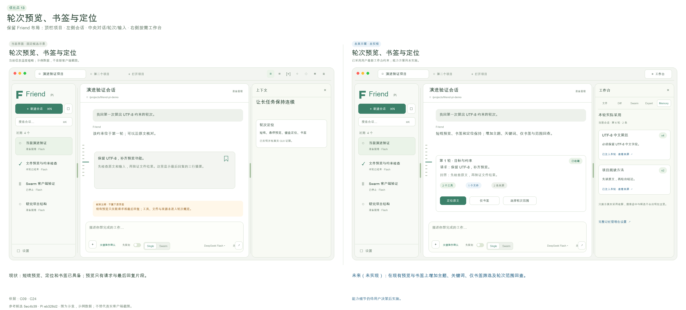
优化前当前已有左侧短线标记、定位、用户+助手预览、书签及冷恢复。根GUI点击第2轮确实出现预览和收藏按钮。不能把这一点写成尚未实现。
竞品对照与证据范围用户提供的Codex局部截图是明确视觉要求：短线侧轨+浮卡+书签。本轮Codex自应用被CUA限制，未真实点悬停；Reasonix实际问题导航slider是另一个可访问形态。
优化方案保留现有侧轨和浮卡风格，增加关键词、仅书签和Topic相关轮次筛选，以及键盘范围跳转。显示用户原问题、结果短摘要、执行/取消状态和来源入口。Topic只参与选材，用户不用维护标签。
客户端变化保留侧轨浮卡和书签，必要时展开关键词筛选；原文/前后文作为只读材料在统一工作台文件页打开，取消独立上下文页。
预期使用体验既保持轻巧导航，又能从数十轮中找回决定，不靠滚动猜位置。
实现边界纯客户端+ReBuild查询；索引可重建，不保存另一份聊天权威。
完成判据50+轮定位、键盘、长中文、多工具中断、仅书签和搜索无命中；重启后书签不串会话，原entry丢失显示明确状态。
风险与限制浮卡不得挡住composer；窄屏采用弹层而非挤占主体。
P2
14 · 分栏比例、窄屏与键盘操作
已实现布局的质量增强 · 工作量S · 依赖 12 · 未来未实现
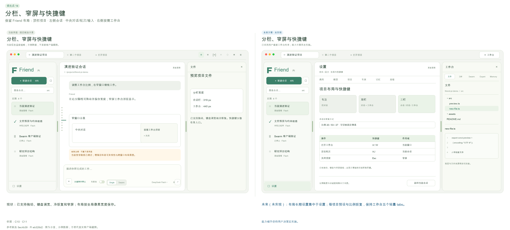
优化前左右可拖分栏、键盘调宽、冷恢复与窄屏左栏自动隐藏已实现。根GUI侧栏319→251拖动成功，720×610窗口检查后恢复。比例不能写成缺失功能；主要问题是多面板/长表单在小窗口的使用质量还需更多覆盖。
竞品对照与证据范围Reasonix实际可调输入区高度与工作区分栏，MiniMax快捷键页详细列面板导航，ZCode外观页能预览代码主题。夜间模式仅为竞品当下设置，方案继续浅色。
优化方案为阅读、对话、协作提供少量可保存的布局预设；每项目恢复比例，双击分隔条恢复默认。窄屏右工作台改抽屉/全屏，关键模式控制始终可操作。补齐统一快捷键说明和焦点返回。
客户端变化右上只有工作台入口，内部文件/Diff/Swarm/Expert/Memory五页。布局预设、字体、密度和快捷键放设置；窄屏工作台抽屉或全屏，单页内容保持简洁。
预期使用体验用户能根据任务分配空间，大量按钮不会在窄窗口挤成难操作的一行。
实现边界纯客户端布局持久化与无障碍；不加入浮动多窗口。
完成判据宽1320×860、窄720×610及系统缩放；鼠标拖/方向键/双击/重启恢复，Tab焦点顺序、Esc关闭抽屉、视觉控件可见。
风险与限制预设不能改变模型、插件或执行状态，只调整布局。
P1
15 · 文件、附件与多标签材料工作台
客户端主流程增强 · 工作量M · 依赖 03, 04 · 未来未实现
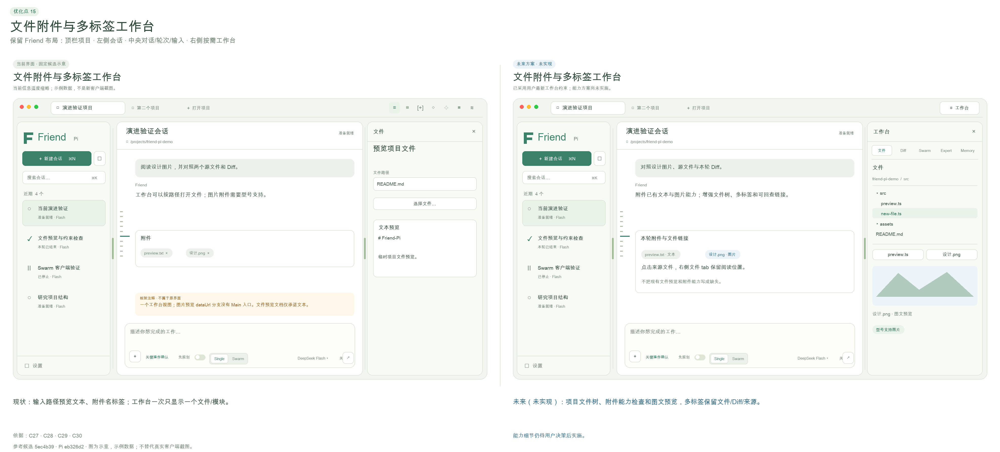
优化前已有相对路径文本预览、选择文件、文本/图片附件；真实new-proof文本预览成功。无文件树和多标签。图片预览代码分支被文本读取边界阻断属于增强，旧文档只承诺文本预览；历史图片丢结构则属于03修复。
竞品对照与证据范围Reasonix本轮实际文件树→README预览。DSH实际计划在右侧全文tab，普通文件链接点击未确认打开预览，不算通过；官方源码支持多类材料。MiniMaxFiles/Changes/Terminal仅资料与入口参考。
优化方案右工作台增加可过滤文件树和材料tabs，回答的项目路径一键定位；支持文本/Markdown/图片安全预览，代码行/片段可加到composer。附件发送前显示大小、截断、文本/视觉能力及相同文件去重。
客户端变化统一工作台五页内切换，文件页支持文件树与少量文档tab，计划和来源作为文件材料打开；Diff参考Codex按文件折叠/行号/增删色展示，避免把所有管理功能做成新的tab。
预期使用体验阅读、提问、修改和审阅形成短路径，同时保持中央对话空间。
实现边界桌面文件读取白名单+Renderer材料tabs；浏览器、交互终端仍不默认加入首版演进包。
完成判据路径越界/symlink越界、NUL/二进制、大文件、无视觉模型、重复附件、取消上传/读取和冷启动；tab关闭不丢其他草稿，引用含准确来源。
风险与限制预览HTML可能执行不受信脚本，应先只读展示/隔离，不能因为竞品可预览就直接执行项目内容。 材料主流程可先交付，不被14的布局预设增强阻塞。
P1
16 · 设置搜索、作用域与配置一致性
先修配置矛盾，再整合设置 · 工作量M · 依赖 08, 12 · 未来未实现
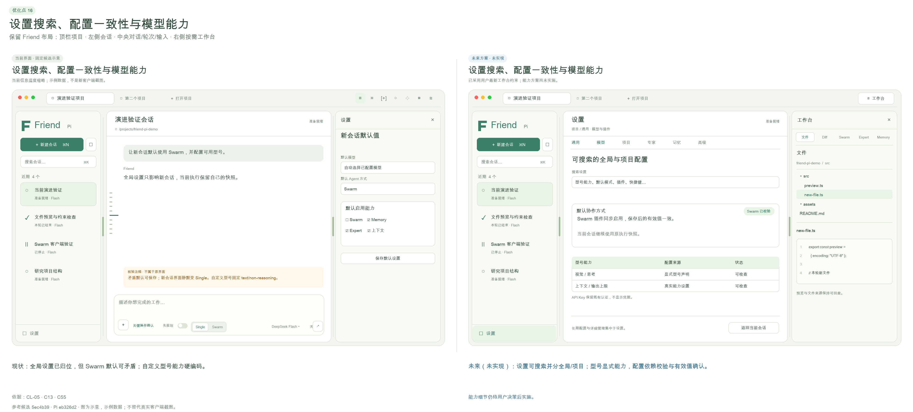
优化前供应商与新会话默认已经放设置，长期学习/验证策略和基准仍在会话工作台。默认Swarm可与默认关闭Swarm插件同时保存，新会话静默Single。自定义Provider目前单模型且固定text/non-reasoning，能力配置不完整。
竞品对照与证据范围MiniMax真实设置有搜索和任务侧栏保持；Reasonix整页设置分模型偏好/服务/权限/诊断，并显示继承来源；DSH实查模型提供商与Agentpreset、General繁忙输入行为；ZCode实查用户作用域和管理分组。
优化方案立即校验模式与插件依赖，矛盾配置保存前明确解决。设置分全局/项目，含模型服务、能力、默认执行、学习/验证、插件和界面；搜索直接定位字段。显示当前轮冻结值与下次新建值，模型测试/保存/真实任务派发各给单独结果。
客户端变化设置负责全部插件启停、专家库、记忆库、学习/验证策略、模型与长期配置。工作台只读当前任务/本轮采用内容，没有插件开关；当前执行冻结值和下一安全边界生效值分别说明。
预期使用体验配置找得到、知道作用范围，也不会保存了Swarm却实际变Single。
实现边界应用设置schema与Pi模型目录/公开配置接口；独立数据目录与凭证权限不变。
完成判据配置依赖/无效JSON/断网测试/模型不支持effort明确错误；当前执行快照不变化，下次安全reload重绑交互；不打印Key、不修改现有Pi配置。
风险与限制诊断导出必须主动去密；不能把‘已保存模型’写成‘真实调用已通过’。
P1
17 · 专家验证模板与受限成长管理
验证主流程完善 · 工作量L · 依赖 06, 08, 16 · 未来未实现
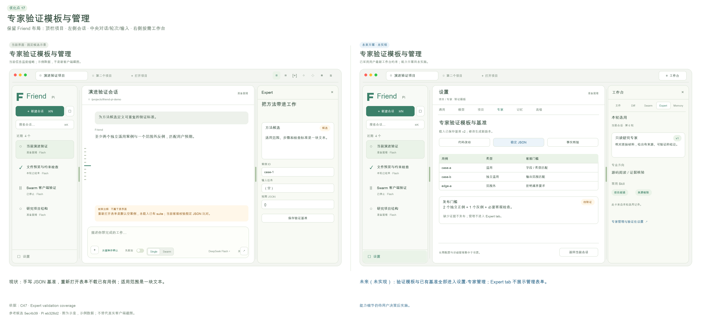
优化前2正例+1反例和JSON oracle门槛已实现，候选验证/撤回/后台暂停有入口；当前范围/标准主要是提示文字，编辑suite表单未载已有基准。根GUI新建/编辑/版本差异/回滚v3/停用已实际成功，客观用例表单查看过，本轮未跑新专家自动发布旅程。
竞品对照与证据范围Reasonix与ZCode Profile界面强调工具/模型继承，但本轮没发现可证明相同‘验证后成长’机制。MiniMax公开Goal verifier随模型路线不同，不能把Worker完成提案当独立复核。这里是Friend-Pi自身应做稳的差异点。
优化方案将适用范围、步骤、检查标准和验证集分别维护；已有suite可读改。为代码/研究/整合提供客观检查模板，明确何种证据足以发布及哪些候选缺条件。允许暂停、撤回、范围缩小和回滚；自动成长只发文本方法，脚本/工具权限由用户单独管理。
客户端变化专家验证套件、候选、发布/撤回、版本编辑全部放设置-专家。工作台Expert只展示本轮专家简介、方向、常用Skill和必要版本标记，不展示验证大表。
预期使用体验用户能审查专家成长的依据，避免提示词越长就被当作越来越聪明。
实现边界Expert验证器可扩展，但使用Pi会话与用户提供oracle；发布不增加工具权限。
完成判据基准载入修改不丢旧案例；案例ID/输入独立性、范围外反例、来源撤回与晚到结果都校验；缺客观条件不发布；方法权限保持原范围。
风险与限制Exact JSON是可复现门槛但不足以覆盖真实代码质量；增加检查类型要先保证可解释性，不引入自动执行候选脚本。
P1
18 · 后台上下文连续性与按需来源回查
已有ReBuild上的可验证体验完善 · 工作量M · 依赖 03, 05, 06, 13 · 未来未实现
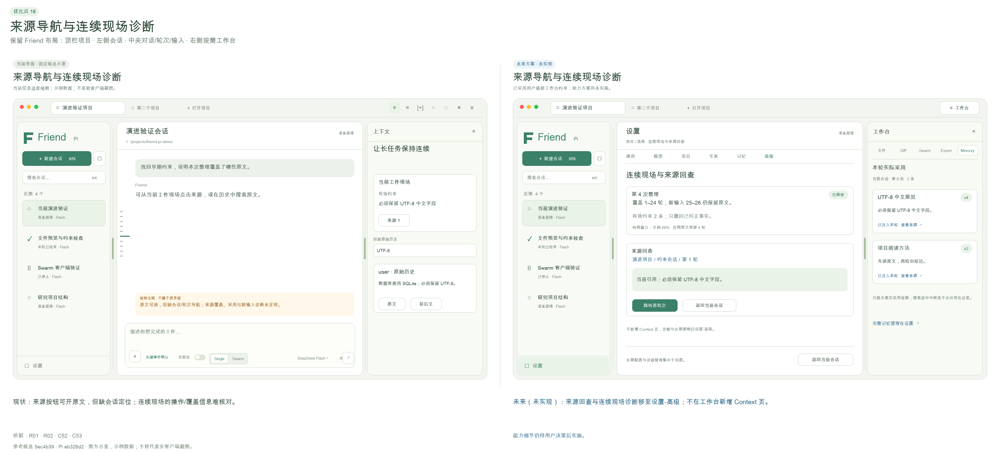
优化前现场、来源按钮、原史搜索/原文/前后文已实现并真实可用；小会话整理回退Nothing to compact，旧同候选真实模型证明两次采用。当前来源导航缺会话名、片段位置及返回路径；本轮未重复大窗口/多主题真实模型所有组合，不能称无限上下文已验证。
竞品对照与证据范围DSH上下文已用百分比与计划来源全文实际可见，Reasonix会话摘要/Context Center为界面与源码线索；Codex官方memory后台整理是资料参考，不能等同ReBuild语义正确性。
优化方案上下文后台维持目标、约束、决定、现场和版本化来源覆盖，不再提供工作台上下文tab。原文/前后文从消息、记忆来源入口打开为文件材料；手动整理和operationId、水位/回退诊断放设置的高级项。失效处理仍可靠，不回放工具。
客户端变化会话工作台不展示上下文预算或现场长卡。用户需要原文时从实际采用Memory或消息来源点开，在文件页阅读并能返回；高级诊断只在设置按需打开。
预期使用体验用户可以检查长任务承接的事实依据，知道哪些内容仍是近期原文、哪些已整理采用。
实现边界ReBuild公共上下文/压缩接口与History查询、客户端导航；不替换Pi loop、不新增向量数据库。
完成判据多主题往返、早期约束、整理中输入、重复摘要、取消、来源缺失、保存失败和冷启；采用成功才推进水位，新增消息仍原文可读，回退不重放工具。
风险与限制后台上下文预算是估计而非保证，仅设置高级诊断按需显示。不能以状态面板或模型自述声称无限上下文。
P1
19 · 统一轻量工作台与真实采用收据
用户已确定的交互方向，尚未实施 · 工作量M · 依赖 03, 08, 12, 16 · 未来未实现
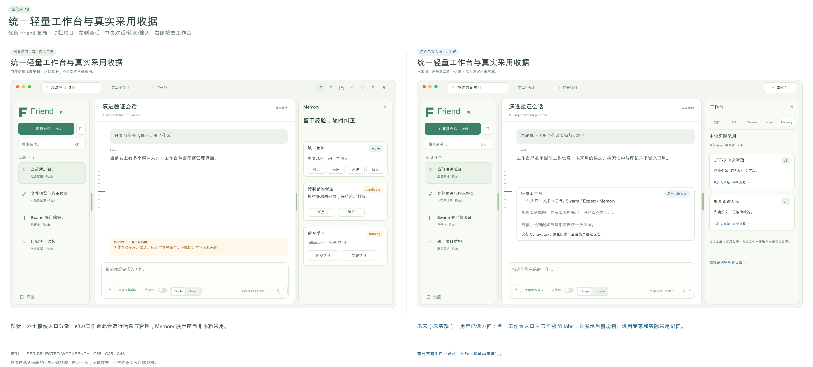
优化前当前右上六模块入口复用同一侧面板，但页面含整库与大量管理表单。源码确认Memory无per-run注入收据，ReBuild临时拼接记忆但memoryRefs为空；Expert有Pi JSONL run/adoption和版本hash，却未被GUI消费，且其runId与桌面runId未统一。因此库列表不能冒充本轮实际使用。
竞品对照与证据范围用户最新截图与明确指令确定统一工作台及五个轻页面。文件/Diff参考Codex官方审阅的按文件折叠、行号、范围与逐行反馈形态；Codex桌面本轮CUA仍受限，因此是用户图与官方资料研究。Reasonix真实文件树/材料预览提供可用对照。
优化方案右上单一工作台按钮控制开合，内部文件、Diff、Swarm、Expert、Memory五页。Swarm显示当前规划依赖；Expert显示实际选用/采用专家介绍、方向、常用Skill；Memory显示本轮实际送入模型的记忆及工具回读来源。启停、全库、编辑、验证和诊断统一移设置，Context不设工作台页面。采用收据绑定runId和Pi原entry，记录id/revision/hash/来源与注入/检索/采用状态；不能以搜索命中或模型自称替代真实采用。
客户端变化一个入口、五个内页、每页少量当前工作信息。确认当前请求未提供记忆时显示未提供；旧轮缺收据时显示未记录，不能改写成没有使用。Expert同样区分未选、目录可用与实际采用。必要版本/来源可展开，详细管理去设置。
预期使用体验工作台成为当前任务的辅助视图，用户不被管理表单淹没；看到的专家与记忆能够解释当前执行。
实现边界客户端信息架构与Memory/Expert实际注入或工具回读的版本化收据。保持Pi JSONL唯一原史，SQLite可重建使用索引；不推断模型内部因果使用。 记忆纠正立即更新有效版本，下一安全模型请求边界不再注入失效内容；已经派发的使用收据保留原版本，不改写历史。专家按既有运行快照冻结。
完成判据同会话三轮分别注入不同记忆，Memory页只显示选定轮实际收据及准确版本；仅检索但未纳入的内容不冒充采用。停用/纠正后旧轮收据不改写，新轮正确生效；真实Expert采用一致。五tab键盘/窄屏/冷启可用；无Contexttab和面板插件开关。 同一逻辑执行的后续请求遇到纠正/遗忘，下一安全边界使用新有效版本或排除失效项，不能为了收据稳定而继续注入旧错误。
风险与限制“已送入上下文”可证明，不等于“模型一定依据它做了决定”。文案必须明确该边界；没有收据时显示未记录，不能补造历史采用事实。